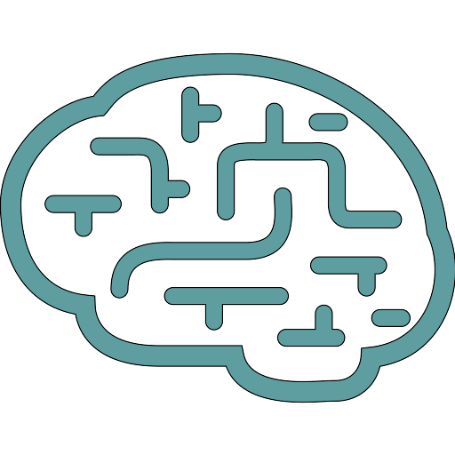

QSIRecon
Links
NMIND Evaluation
- Checklist Version:
- 1.1
- Evaluator(s):
- NMIND
- Date:
- 2025-05-15
- History:
- Migrated from the old format - history is unavailable
Testing
Bronze Tier
- Provide / generate / point to test data
- true
- Provide instructions for users to run tests that include instructions for evaluation for correct behavior
- true
Silver Tier
- Some form of testing suite present
- true
- Test coverage > 50%
- false
Gold Tier
- Test coverage > 90%
- false
- Benchmarking information is provided for examples
- true
Infrastructure
Bronze Tier
- Code is open source
- true
- Package is under version control
- true
- Readme is present
- true
- License is present
- true
- Issues tracking is enabled
- true
- Digital Object Identifier (DOI) points to latest version
- true
- All documented installation instructions can be successfully followed
- true
Silver Tier
- Issue template(s) available
- true
- Continuous integration runs tests
- true
- No excessive files included
- true
Gold Tier
- Continuous integration builds packages
- true
- Continuous integration validates style
- true
- Journal of Open Source Software submission
- true
- Contribution guide present
- true
- Code of Conduct present
- false
Documentation
Bronze Tier
- Landing page (e.g., GitHub README, website) provides a link to documentation and brief description of what program does
- true
- Documentation is up to date with version of software
- true
- Typical intended usage is described
- true
- An example of its usage is shown
- true
- Document functions intended to be used by users
- true
- Description of required input parameters for user-facing functions with reasonable description of inputs
- true
- Description of output(s)
- true
- User installation instructions available
- true
- Dependencies listed
- true
Silver Tier
- Background/significance of program
- true
- One or more tutorial to showcase the multiple of the program's usages
- true
- Any alternative usage that is advertised is thoroughly documented
- true
- Thorough description of required and optional input parameters
- true
- Document public functions
- true
- A statement of supported operating systems / environments
- true
Gold Tier
- Continuous integration badges in README for build status
- true
- Continuous integration badges in README for tests passing
- true
- Continuous integration badges in README for coverage
- true
- Document functions, classes, modules, etc.
- true
- Has a documented style guide
- true
- Maintenance status is documented
- true